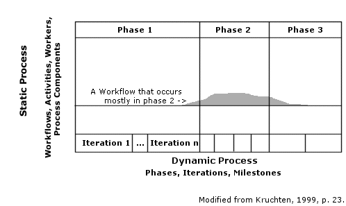

Software Process Models
Contents
- Introduction
- The Process Model
- Agile vs. Heavyweight
- CMM - Capability Maturity Model for Software
- PSP - Self-Improvement Process for Software Engineers
- RUP - Rational Unified Process
-
RAD - Rapid Application Development
- Classic Mistakes
- Software Development Fundamentals
- Manage Risks
- Schedule-Oriented Practices
- Links to More Information
- References
Introduction
Software process models are frameworks of policies, procedures, and standards that provides guidance in the construction of quality software. Each model is designed for a particular purpose, for example to ensure a minimum level of quality, or to evaluate risk associated with a particular contractor selection. Most software process models fall into one of the following categories (from Sheard, 1997):
-
Standards and Guidelines; examples:
- ISO 9000 series for Quality Systems
- MIL-STD-498 (Software Development and Documentation)
- other United States Military Standards
-
Process Improvement Models and Internal Appraisal Methods; examples:
- CMM and its relatives
- SECAM
- Trillium
-
Contractor Selection Vehicles; examples:
- SCE (Software Capability Evaluation)
- SDCE (Software Development Capability Evaluation)
-
Quality Awards; examples:
- Malcolm Baldrige National Quality Award
- ISO/CD 9004-8
-
Software Engineering Life-Cycle Models; examples:
- MIL-STD-498
- EIA/IEEE J STD 016
- ISO/IEC 12207
-
Systems Engineering Models; examples:
- MIL-STD-499B
- SE-CMM
- SECAM
- IEEE 1220
- EIA IS 632 and EIA/ANSI 632
- ISO 15288
Consolidation and Coordination
One problem with so many options is deciding which one to use. For example, if a software vendor is certified in CMM, is there enough overlap between CMM and ISO 9001 requirements to get business from clients who require ISO certification - and vice-versa?
Because of this problem, consolidation of frameworks began in the mid- to late-1990s, with Carnegie Mellon's Software Engineering Institute (SEI)'s move to support CMM Integration (CMMI) and the introduction of ISO 15504 (SPICE). Writers of standards and process models began to coordinate efforts and make available cross references to each others' work (e.g. Moore, 1998).
The Process Model
Acuna and Juristo (2005) report that there is not full agreement on the meaning of the term "software process" (p. xiv). While this is due in part to variation in the definition of the term across different disciplines (Waterson, Weibelzahl and Pfahl, 2005 p. 135), this paper takes the point of view that software process models are frameworks for software engineering and that they are used for multiple purposes.
For example, current work looks at focusing a model to attain greater software dependability (Madachy and Boehm, 2005); and to manage personnel allocation to balance competing requirements of application enhancement and control of complexity during evolution of the software product (Lehman, Kahen, and Ramil, 2005); and to study socio-technical aspects of the process (Waterson, Weibelzahl, and Pfahl, 2005). Furthermore, the process models described in this article have similarities in that their focus is process improvement, they must be adapted to fit a particular organization's needs and culture, most require significant effort in learning and implementing the process, and they require continual adjustment and refinement.
Programmers and other technical personnel typically resist efforts to implement one of these models, because they are seen as an attempt to structure their work and take away the freedom to create. To paraphrase Humphrey (1989), software engineering is an intellectual process that cannot be structured like other kinds of work (p. 247). However, an organization needs consistency and predictability in software projects. When tasks can't be structured, consistency and predictability are at risk: it is left to individual talent and motivation to ensure that industry-wide standards for application code and quality are followed, to pass on intellectual capital of the organization, etc.
The tasks and workflow involved in creating software are the process. This process must be documented so that it can be used repeatedly, that is we model the process. This is risky though, because the process is difficult to depict completely so that the model can be used to guide work but still be flexible enough to allow variation in task sequence (ibid. p. 251). This need for task sequence variability is one manifestation of the inadequacy of a one-dimensional model: one view is not enough, we need additional "views" (ibid. p. 252):
- Functional
- Behavioral
- Structural
- Conceptual
Process Models and Lifecycle Models
Process models are lifecycle models described at a high-level, where individual distinctive features of particular lifecycle models are less important. Humphrey describes this as the U (universal) level of detail (ibid. p. 249). Process models have two other levels of detail: W (worldly), and A (atomic), where distinctive model characteristics determine the procedures and workflow (ibid.).
Agile vs. Heavyweight
One problem with process models is that you have to learn them, implement them, and then continue to improve them. Why bother when you can build software without following any particular process?
You can build software without defining a process, but it puts an over-reliance on individual skill and determination. Even with the most highly-skilled team it is likely there will be problems because of schedule pressure, shortchanged QA, friction between programmers and managers or sales people, etc. Some arguments against process models include:
- Small companies don't have the money or staff to implement process adequately.
- The time spent developing a process is time not used for product development, time in which you may worry that your known and unknown competitors are gaining market share.
- Lack of process requires more skill and experience to achieve the company's goals. People perceive that working in such an environment provides more opportunity to learn. Implementing a process might reduce opportunity for workers to learn and increase their value to the company, and therefore their earning power. Programmers don't want to be pigeonholed into a specific role in which they never have the chance to gain experience with other facets of the product lifecycle.
- Many programmers consider process methodologies to be obstructive, restrictive, and ultimately ineffective.
Advocates of agile methods value "individuals and interactions over processes and tools, working software over comprehensive documentation, customer collaboration over contract negotiation, and responding to change over following a plan." These proclamations in the Agile Manifesto insinuate that the model proposed by Humphrey (ibid), which lays the groundwork for the Capability Maturity Model (CMM) (Paulk et. al. 1995), does not value the individual, requires comprehensive documentation, requires contract negotiations with customers, and cannot respond to change.
It could be understandable to have these ideas about CMM after reading Paulk et. al. (ibid), having failed to read Humphrey's work (1989). But Humphrey seems to anticipate (and resolve) arguments made by agilists:
- Valuing individuals and interactions over processes and tools - Humphrey states "We are dealing with an intellectual process that must dynamically adjust to the creative needs of the professionals and their tasks. A trade-off is thus required between the individual need for flexibility and the organizational need for standards and consistency." (ibid. p. 247.) One has to realize that the placement of value on individuals rather than processes and tools is part of a corporate culture that has little to do with process methodology.
- Valuing working software over comprehensive documentation - Humphrey states "As with any standard, process standards must not be overspecified" (p. 254).
- Valuing customer collaboration over contract negotiation - Humphrey acknowledges the "business need for a firm contractual relationship" but states that "The requirements-based process motivates counterproductive behavior. The end users are forced to firmly state their needs before they are ready. Any changes are then frozen so a contract can be negotiated. Then the adversarial debates start on what functions are covered by the contract....This process results in wasted time and money, distrust, and a poor product....It is far better to have the bickering up front when everyone retains their opinions. Whether this requires a study, a prototype, or an evolutionary development program, the resulting understanding will provide a firmer foundation for the entire project" (p. 26). I.e. Humphrey indicates a need for customer collaboration and a need for flexibility.
- Valuing response to change over following a plan - Humphrey states "If it (software process) is not designed, it will merely be adjusted to each successive crisis. Overall performance then will be essentially unchanged: a chaotic process that is doomed to remain one." (ibid. p. 22.)
A process that is agile must have some process definitions - there is no silver bullet that allows you to have an effective process without having to read, learn, and invest time and money implementing it. An agile method might be the best choice but you won't know that if you don't know what the other choices are and if you have not studied them.
Finally, none of the proclamations made in the Agile Manifesto preclude them from manifesting in a large process like the one described by Humphrey way back in 1989. Whether you use heavyweight or agile, the elements required to succeed with process improvement are (ibid. p. 22):
- To improve the software process, someone must work on it!
- Unplanned process improvement is wishful thinking.
- Automation of a poorly defined process will produce poorly defined results.
- Improvements should be made in small, tested steps.
- Train, train, train!
CMM - Capability Maturity Model for Software
The CMM (Paulk et. al., 1995) is a template for process improvement in software companies. The reference by Paulk et.al. (ibid.) derives from the more readable book by Humphrey (1989). Reviewed by hundreds of software professionals, it represents the best practices in the field. The CMM describes key elements of an effective software process. Its purpose is to guide an organization through the process of determining the organization's current process maturity, identifying the issues most critical to improving the organization's software process and quality, and selecting process improvement strategies (Paulk et. al., p.5).
CMM variants were developed to meet the needs of a variety of disciplines. Organizations could implement one CMM for software development, another for systems engineering, another for workforce management, etc. Recently, Capability Maturity Model Integration (CMMI) has evolved to solve the expense and management burden faced by organizations that implement multiple CMMs. These new CMMI standards replace the original CMM.
Humphrey and Konrad (2005) state that CMMI is difficult to implement, and that "these models [CMMI and People CMM] provide high-level management and engineering guidance, not specific operational processes used by developers and their teams" (p. 159). PSP and TSP frameworks (discussed below) fill this gap (ibid).
Assumptions
Authors Paulk et. al. present the CMM as it should be applied for "a large, complex software project" (p.79). What is assummed (but not stated) is that organizations that take on such large projects also have the resources to implement the CMM. Another assumption is that it is easier to pare back the layers of inefficiencies from the large implementation, to make it work in a small business environment. However they provide no information on how to do this. (If that is what you need, you should read instead Humphrey, 1989.) Nor do they provide a simple list of the best practices that an organization can follow. (If that is what you need, you should read instead McConnell, 1996.)
Although the procedures described in the CMM may appear expensive and time consuming, the authors state in many places that implementation must be adjusted to suit the organization. Improvement is based on measurements of processes for succeeding generations of projects. For a young company all projects are unprecedented, with no prior measurements to use in comparison.
How Much Does it Cost?
Organizations using the CMM report spending hundreds of thousands of dollars implementing it:
- Hughes - $445 K over two years
- Tinker - $462 K over one year
- Raytheon - $1 M annually from 1988 to 1991
Tool Support for CMM
Rational Software (a subsidiary of IBM) markets an integrated suite of tools for managing software projects. Rational has the market lead in this area.
- Rational ClearCase - an artifact management tool
- Rational ClearQuest - manages project activities such as tasks, defects, requests for enhancements, and provides charting and reporting capabilities for tracking progress
CMM Introduction
Process as described by the CMM includes practices for planning, engineering, and managing software development and maintenance (p.4). "C"apability refers to an organization's software process capability. "M"aturity refers to an organization's implementation of software process. Units and descriptions are as follows:
| Level | Maturity | Process Capability |
|---|---|---|
| 1 | Initial | Depends on the individuals |
| 2 | Repeatable | Disciplined |
| 3 | Defined | Standard and consistent |
| 4 | Managed | Quantifiable and predicatable |
| 5 | Optimizing | Continuously improving |
However, the CMM is not complete. It is best used as a tool for guiding software process improvement. Improvement of software process is a long term, incremental process that can take many years (p.14).
The CMM was designed to be used for three purposes:
- Software process assessments, where a specially trained team determines an organization's current software process level and prioritizes the steps needed for improvement
- Software capability evaluations, where a specially trained team identifies qualified contractors or monitors the software process for an existing project.
- Software process improvement - where an organization that has completed the process assessment and capability evaluation, and uses the recomendations from those to guide process improvement.
CMM Maturity Definitions
The CMM framework consists of five maturity levels, each of which is a set of process goals. Improvement is evolutionary, from an ad hoc, immature process to a disciplined, mature process, encompassing five stages.
Level 1: Initial
Characterized as ad hoc, few processes are defined and success depends on the overcommitment and competence of individuals in the organization. Even when a good engineering process is in place, other weak process areas in the organization allow problems to arise as a series of crises. If no defined process is followed, this is the default.
Level 2: Repeatable
Project commitments are realistic and based on both experience and the requirements for the project. Software project management is guided by processes that are documented, practiced, measured, and enforced (p. 18). Note that processes are allowed to differ between projects. Process areas for maturity level 2 include:
- Requirements management
- Software project planning
- Software project tracking and oversight
- Software subcontract management
- Software quality assurance
- Software configuration management
Level 3: Defined
Characterized by a documented standard software process for developing and maintaining software. The standard software process is tailored for individual projects and the tailored process is called the project's defined software process. These terms are used throughout the CMM. Process areas for maturity level 3 include:
- Organization process focus
- Organization process definition
- Training program
- Integrated software management
- Software product engineering
- Intergroup coordination
- Peer reviews
Level 4: Managed
Measurements of software processes are collected in a software process database and analyzed. Process is stable, and incorporates measurements that define project limits. When limits are exceeded, process is in place to understand the cause and take appropriate action. Process areas for maturity level 4 include:
- Quantitative process management
- Software quality management
Level 5: Optimizing
Level 5 focuses on changing the causes of chronic waste, manifested in the form of rework, to prevent it from recurring. Software processes are evaluated to prevent repetition of the steps leading to known types of software defects. Knowledge gained in this process is disseminated througout the organization. Process areas for maturity level 5 include:
- Defect prevention
- Technology change management
- Process change management
CMM Structure
Maturity Level
Maturity levels indicate process capability. A maturity level is "a well-defined evolutionary plateau toward achieving a mature software process" (p.30). Each maturity level except level 1 contains several key process areas.
Note that new technologies and applications add variability to the equation and therefore reduce process capability. However, organizations that operate at higher maturity levels are able to identify problems early in the development cycle (p. 27).
Key Process Areas
Key process areas as described at each maturity level are fully implemented and institutionalized. I.e. an organization that reaches a particular maturity level has mastered the key process areas for that level.
Each key process area identifies a specific issue that must be satisfied and the process must be institutionalized to achieve a maturity level (p. 32). Note that the goals of a key process area may be achieved in different ways from one project to another.
Key Practices
Key practices must be interpreted in the context of a specific implementation (p. 41). Key practices are the meat of the CMM. They describe what is to be done but not how to do it. It is beyond the scope of this document to describe key practices. Most of the documentation in Paulk et. al. (1995) is introductory material summarized here. The key practices are described in chapters 7 through 10 of the book, and are available as a separate download (in PDF format) from Carnegie Mellon's Software Engineering Institute (SEI).
Common Features
Key practices are organized by common features. Common features are attributes of key process areas. The common features are:
- Commitment to Perform - consists of actions an organization takes to establish an enduring process. Essentially, establishing policies and leadership.
- Ability to Perform - the organization must have the ability - a set of preconditions - to competently implement the software process.
- Activities Performed -
- Measurement and Analysis
- Verifying Implementation
PSP - Self-Improvement Process for Software Engineers
Humphrey's "Managing The Software Process" (1989) was the foundation for the Capability Maturity Model (CMM), and PSP (Personal Software Process) builds on that work by presenting the missing link: how to start with the initial process, how to actually implement practices, and how to evolve the process. Humphrey's latest book, "PSP: A Self-Improvement Process For Software Engineers", is the fourth he has written on PSP. Humphrey describes the PSP as "a self-improvement process that helps you to control, manage, and improve the way you work" (p. 3). While the CMM standard provides no practical guidance, PSP provides exercises, guidance for each practice, and downloadable support materials for logging and analyzing data.
The book guides the programmer through the software processes that are (i.e. should be) used in real-world professional software development, with the goal of building or improving software engineering skills and personal performance. The kinds of skills PSP emphasizes are 1) measuring software size, 2) planning, 3) estimating, 4) scheduling, 5) software quality, 6) reviews, 7) software design, and 8) verification. These skills are developed through exercises in which the programmer writes programs and collects data on the processes, followed by an analysis of the data to pinpoint personal weaknesses.
Humphrey and Konrad (2005) report that PSP and the TSP (Team Software Process) address shortcomings of CMMI but are not entirely sufficient on their own. The most effective approach is to use CMMI, TSP, and PSP together.
RUP - Rational Unified Process
The Rational Unified Process (RUP), developed by Rational Software, is a software engineering process framework that was designed for adaptation and extension by the adopting organization. RUP is integrated with a suite of software development tools sold by Rational (Kruchten, 1999, p.17).
Best Practices
Something missing in CMM is a simple list of best practices. You have to dig through CMM's Key Practices and build your own set. Kruchten (ibid) describes a high level list of practices, by way of introduction to RUP:
- Develop software iteratively
- Manage requirements
- Use component-based architectures
- Visually model software
- Verify software quality
- Control changes to software
Structure
RUP is often described with a chart that has x (dynamic structure) and y (static structure) axes.
The x axis shows the life cycle of the project, and when the workflow activities are performed. The
y axis shows process components, activities, workflows, artifacts, and workers (ibid, p.23).

Static Structure
Processes as defined in the RUP have four elements:
-
Workers
Workers do not directly correspond to individuals, because one individual can take on the role of multiple workers. RUP describes a set of workers which was used in the design of the RUP (ibid, p. 229).
-
Activities
An activity is a unit of work that a worker (i.e. RUP worker element) will perform. An activity is useful in terms of project planning and progress, but not if too big or too small. Activities have three steps categorized as follows:
- Thinking
- Performing
- Reviewing
-
Artifacts
Artifacts are products of the project, the result of activities by workers. Artifacts include models, elements of models, documents, source code, executables, and defects. These are subject to version control. Reports, though a product of the project, are not like artifacts in that they are not subject to version control. RUP defines five categories of artifacts:
- Management Set
- Requirements Set
- Design Set
- Implementation Set
- Deployment Set
-
Workflows
Workflow, or process workflow, is the designation RUP gives to a sequence of activities that produce something of value to the process. Workflows create a relationship between workers and activities.
Typically, a workflow produces an artifact. RUP separates workflows into three classes:
-
Core Workflows
These represent partitioning of workers and activities (ibid p.44). Because RUP uses an iterative technique, many workflows are repeated during the life cycle of the project.
Core Engineering Workflows
- Business modeling
- Requirements
- Analysis and design
- Implementation
- Test
- Deployment
Core Supporting Workflows
- Project management
- Configuration and change management
- Environment
-
Iteration Workflows
Iteration workflows take exception to the y-axis order of RUP's process components in that they are represented along the x axis. This is because many activities are performed iteratively, and this is how RUP refers to groups of workflows that, taken together through an iteration, constitute some milestone.
-
Workflow Details
Not directly visible on a graphical representation of RUP, workflow details are used to group related activities that belong to a larger core workflow, into a smaller unit. These provide flexibility in implementing RUP.
-
Core Workflows
Additional static process elements
Supplemental to activities and artifacts, these "make the process easier to understand and use" (ibid, p.46) - in other words, these enforce the process because 1) after spending thousands of dollars for the software tools, your boss doesn't want the software sitting on a shelf, and 2) once you start putting information in these tools, the only way you can get it out is to continue using the tools.
The additional elements are:
-
Guidelines
As the name implies, guidelines provide quick answers to questions about RUP, checklists for assessing artifacts, how-to information, etc. Guidelines are a built-in component of Rational Software's product line.
-
Templates
Blank artifacts. Packaged with Rational Software's product line, though you can create your own if you don't use Rational's products. Examples include templates for the project vision and scope, a use case, and a project plan.
-
Tool Mentors
Not necessarily human, these show you how to use the software tools that automate software process workflows.
-
Concepts
For example: iteration, phase, risk - these are attached to the appropriate workflow.
Dynamic Structure
Dynamic structure describes the software development life cycle (SDLC) structure of the RUP: iterative development with phases and milestones driven by risk mitigation and incremental evolution (ibid, p. 51). This structure shows where in a project life cycle the process workflows occur. Iterative development means workflows are repeated until the project is complete.
Kruchten explained how the "waterfall model", or sequential process, fails in software process.
- The assumption that requirements will be frozen, so the steps between requirements analysis and design occur only once and not before requirements are fully and completely defined and frozen. This works for tangible, low-tech products but not software.
- The assumption that design can be complete and correct before proceeding. For any non-trivial project there are unknowns that require an investigation, including some trial and error work to discover a cost effective or feasible technique. At some point in the investigation, you often find unforseen technical limitation, and you have to change the design and start over.
RUP's iterative life cycle redefines the waterfall model: the steps for requirements analysis, design, construction, and integration become phases (inception, elaboration, construction, and transition) that do not necessarily correspond to the waterfall steps. Each phase has a complete set of steps from the waterfall, but the sequence of steps may be repeated several times before the phase is complete. Emphasis on particular steps shifts depending on the phase.
Phases
Four phases constitute one complete development cycle; one development cycle usually overlaps the next a little. Kruchten states that each iteration in RUP comprises a complete set of four phases, but with varying emphasis depending on the phase in which the iteration occurs (p. 119).
- Inception - the vision and scope of the project is developed.
- Elaboration - project planning and design, performing proof-of-concept work on unknown elements.
- Construction - building the product and evolving the vision, the architecture, and the product.
- Transition - to users, including delivery, training, support, and maintenance.
Milestones
Milestones are decision points defined by criteria that are used to determine whether to proceed, abort, or change course (p. 59). Milestones occur at the end of each phase:
| Phase | Milestone |
|---|---|
| Inception | Life-cycle objective |
| Elaboration | Life-cycle architecture |
| Construction | Initial operational capability |
| Transition | Product release |
RAD - Rapid Application Development
Rapid application development (RAD) does not have a definition that is widely agreed upon. The definitive work on the subject is by McConnell (1996). Rapid development, according to McConnell, is just a description and means "developing software faster than you do now" (p. 2).
But that isn't the end of the story; McConnell put together a set of common-sense criteria for managing software schedules, that can be optimized for a specific goal: lowest defect rate, fastest execution speed, greatest user acceptance, best maintainability, lowest cost, or shortest development schedule (ibid. p. xv). Achieving rapid development requires choosing effective schedule-oriented practices that work for the goals you have chosen. McConnell describes three kinds: speed-oriented, schedule-risk oriented, and visibility-oriented practices.
RAD strategy does not rely simply on schedule-oriented practices; there are four parts to RAD strategy: (1) Avoid classic mistakes, (2) Apply development fundamentals, (3) Manage risks to avoid catastrophic setbacks, (4) Apply schedule-oriented practices such as the three kinds mentioned above. McConnell argues that following the first three parts alone will help you achieve efficient development.
McConnell advises using all four parts and not relying solely on schedule-oriented practices.
McConnell found that software projects have four dimensions:
- People
- Process
- Technology (tools)
- Product (size and character)
Each dimension plays a role in development speed, and other success factors such as quality and schedule accuracy. In other words, an effective RAD strategy will address all four dimensions.
Classic Mistakes
Classic mistakes are ineffective practices that have been tried often and that have predictable and bad results. These are classified under each of the four dimensions described above. McConnell provides a list of several dozen classic mistakes; a sampling of these is included here: "undermined motivation", "Uncontrolled problem employees", "Abandonment of planning under pressure", "Shortchanged quality assurance", "Omitting necessary tasks from estimates", "Developer gold-plating", "Lack of automated source-code control."
Classic mistakes presents examples of what not to do, something missing in the other more-acedemic methodologies.
Software Development Fundamentals
If you want to improve your ability to predict project schedule, you need to pay attention to fundamentals. Management fundamentals, technical fundamentals, and quality-assurance fundamentals are all part of the equation. As you can see, the topics under these sections cover a lot of material; you can find excellent references for many of them in McConnell's book (1996).
Management Fundamentals
The "classic trade-off-triangle" consists of schedule, cost, and product. Management would like to control all three. It makes sense that you have to put project management discipline in place before software engineering discipline. Project management fundamentals include estimation and scheduling, planning, tracking, and measurement.
Technical Fundamentals
Technical fundamentals are modern programming practices. In order to be successful in this area you need to know different methods and practices, because projects benefit from particular combinations. Examples of technical fundamentals include requirements management, design, construction, software configuration management.
Links to More Information
Boxes and Arrows - A peer-written journal dedicated to discussing, improving and promoting the work of practitioners in information architecture, information design, interaction design, interface design.
SEI - Carnegie Mellon Software Engineering Institute - an online source for CMM and other information about software engineering and management.
Agile Alliance - The non-profit organization dedicated to agile approaches for software development.
http://alistair.cockburn.us Alistair Cockburn - Author of Surviving Object-Oriented Projects, Crystal methodologies, etc. See his on-line article http://alistair.cockburn.us/Characterizing+people+as+non-linear%2c+first-order+components+in+software+development Characterizing People as Non-Linear, First-Order Components in Software Development.
Martin Fowler - Martin Fowler's site - see his on-line article The New Methodology.
Lean Programming - Poppendieck, Mary, 2001: Lean Programming: Software Development Magazine.
References
Acuna, Silvia T., and Juristo, Natalia (eds.), 2005, Software Process Modeling: Springer Science and Business Media, Inc., 208 pages. ISBN: 0-387-24262-7
CMMI Product Development Team. Capability Maturity Model Integration (CMMI), Version 1.1: CMMI for Systems Engineering, Software Engineering, Integrated Product and Process Development, and Supplier Sourcing (CMMI-SE/SW/IPPD/SS, V1.1) Staged Representation: (CMU/SEI-2002-TR-012,ESC-TR-2002-012). Pittsburgh, PA: Software Engineering Institute, Carnegie Mellon University, November 2000. URL: http://www.sei.cmu.edu/publications/documents/02.reports/02tr012.html.
Humphrey, Watts S., 1989, Managing the Software Process: Addison-Wesley, 494 pages. ISBN: 0-201-18095-2
Humphrey, Watts S., 2005, PSP: A Self-Improvement Process for Software Engineers: Addison-Wesley, 346 pages. ISBN: 0-321-30549-3
Humphrey, Watts S. and Konrad, Michael D., 2005, Motivation and Process Improvement, in Acuna, S. T. and Juristo, N. (eds.), Software Process Modeling: Springer, 208 pages. ISBN: 0-387-24261-9
Kruchten, Philippe, 1999, The Rational Unified Process: An Introduction: Addison-Wesley, 255 pages. ISBN: 0-201-60459-0
Lehman, M., Kahen, G., and Ramil, J., 2005, Simulation Process Modeling for Managing Software Evolution, in Acuna, S. T. and Juristo, N. (eds.), Software Process Modeling: Springer, 208 pages. ISBN: 0-387-24261-9
Madachy, R., and Boehm, Barry, 2005, Software Dependability Applications in Process Modeling, in Acuna, S. T. and Juristo, N. (eds.), Software Process Modeling: Springer, 208 pages. ISBN: 0-387-24261-9
McConnell, Steve, 1996, Rapid Development: Taming Wild Software Schedules: Microsoft Press, 660 pages. ISBN: 1-55615-900-5
Moore, James W., 1998, Software Engineering Standards: A User's Roadmap: IEEE Computer Society, 296 pages. ISBN: 0-8186-8008-3
Paulk, Mark C., Weber, Charles V., Curtis, Bill, and Chrissis, Mary Beth, 1995, The
Capability Maturity Model: Guidelines for Improving the Software Process, Carnegie Mellon University Software Engineering
Institute: Addison-Wesley, 441 pages.
ISBN: 0-201-54664-7
Sheard, Sarah A., 1997, The Frameworks Quagmire, a Brief Look: Software Productivity Consortium, NFP.
Waterson, P., Weibelzahl, S., and Pfahl, D., 2005, Software Process Modeling: Socio-Technical Perspectives, in Acuna, S. T. and Juristo, N. (eds.), Software Process Modeling: Springer, 208 pages. ISBN: 0-387-24261-9